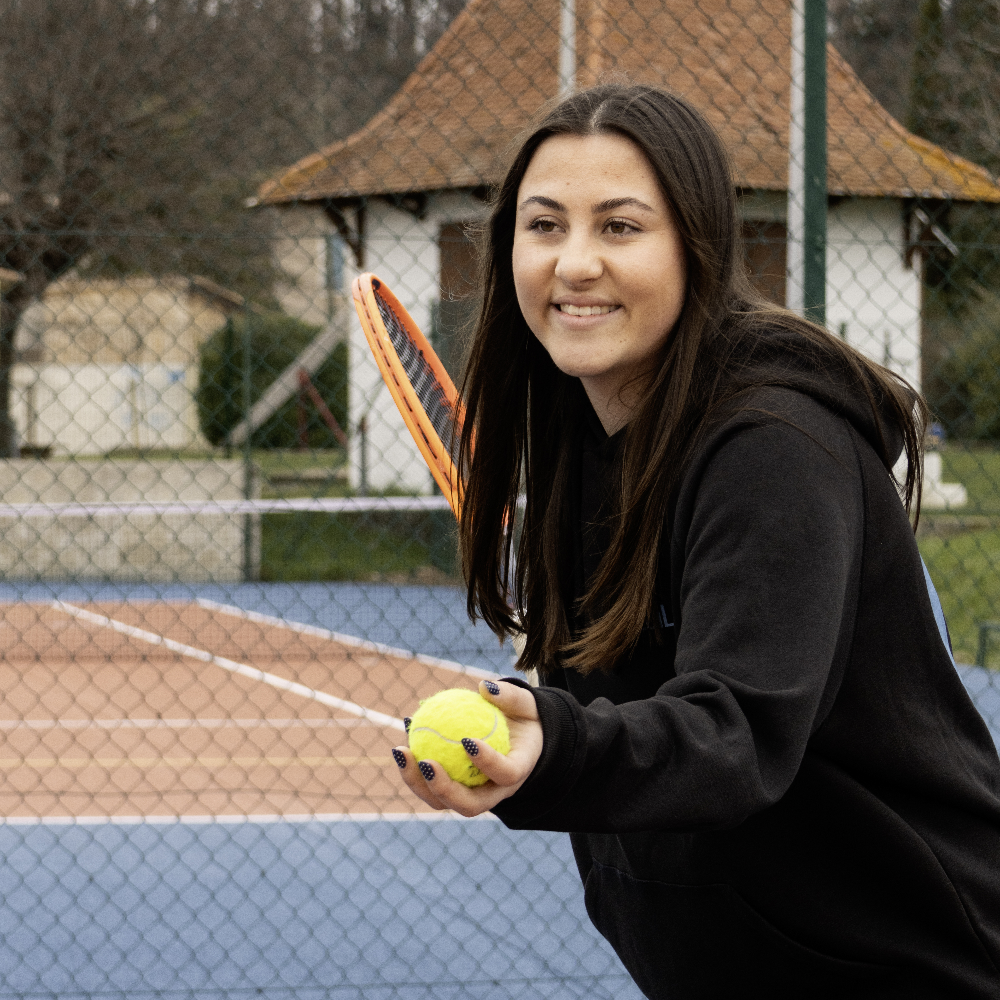

Un projet autour du tennis
Je m'appelle Eléa Le Carrérès et je présente l'organisation d'un tournoi de tennis universitaire.
Découvrir le tournoiQui suis-je ?

Étudiante en Master 2 STAPS à l'Université Paris Nanterre, je me spécialise dans l'organisation d'événements sportifs. Mon ambition est de travailler dans la gestion d'événements de tennis. Ce site, qui présente un tournoi universitaire imaginé pour l'occasion, me permet de mettre en pratique mes compétences en conduite de projet et en communication.
- Nom
- Eléa Le Carrérès
- Formation
- Master 2 STAPS Management du sport, parcours Management des événements et des loisirs sportifs (MELS)
- Université
- Université Paris Nanterre, Nanterre
- Contact
- elea.lecarreres@gmail.com
Ma formation
Le Master 2 Management du sport, parcours MELS, forme des cadres capables de concevoir, piloter et évaluer des projets événementiels dans le secteur sportif. Les enseignements portent sur le marketing du sport, le droit du sport, la gestion des ressources humaines, le management d'équipe projet, la gestion comptable, la communication digitale et l'anglais. Des modules de spécialité complètent ce socle, notamment sur les enjeux sociétaux de l'événementiel sportif et sur la réalisation d'un événement sportif. L'équipe pédagogique réunit des enseignants de l'université et des professionnels du secteur.
Compétences
Je sais piloter un projet événementiel, de la conception au bilan, et animer une équipe. Je maîtrise les bases du marketing, du droit et de la gestion budgétaire appliqués au sport, ainsi que la communication digitale et les études de public.
Projets
Cette année, ma promotion organise les Jeux de l'UPN, des olympiades réparties sur une journée sur le campus de Nanterre. Un stage de six mois viendra compléter cette expérience.
Objectifs
Je vise un poste de gestionnaire ou de chargée d'événements dans le milieu du tennis : tournois, animations et partenariats autour de cette discipline.
Mon université
L'Université Paris Nanterre (UPN) est une université pluridisciplinaire située à Nanterre, dans les Hauts-de-Seine, à l'ouest de Paris. Elle accueille plus de 35 000 étudiants, dont plus de 6 400 étudiants internationaux, et propose des formations dans quatre grands domaines, des lettres et sciences humaines au droit, à l'économie et au sport. Elle est reconnue pour sa recherche et pour son ouverture sur l'Europe, en tant que membre de l'alliance universitaire EDUC.
Le sport occupe une place importante sur le campus. L'UFR STAPS, où je suis formée, est installée au 200 avenue de la République. Le Service universitaire des activités physiques et sportives (SUAPS) propose plus de 50 activités, et le centre sportif universitaire a été rénové et inauguré en octobre 2024. Cet environnement en fait un lieu idéal pour organiser des événements sportifs comme les Jeux de l'UPN.